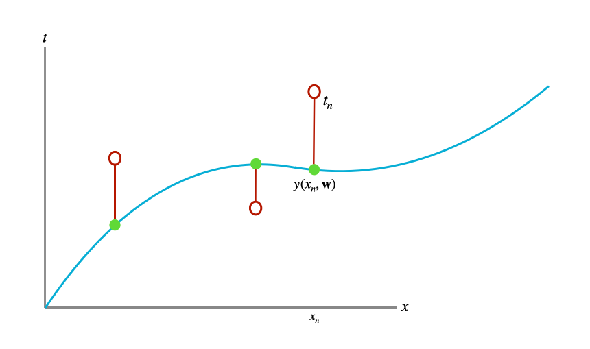
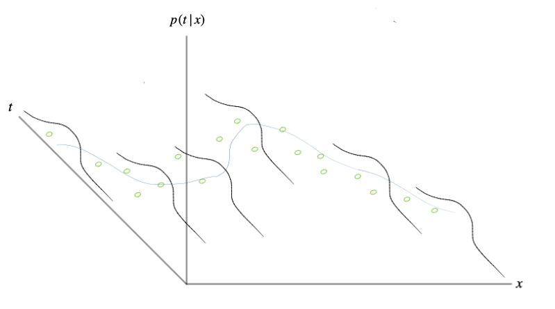
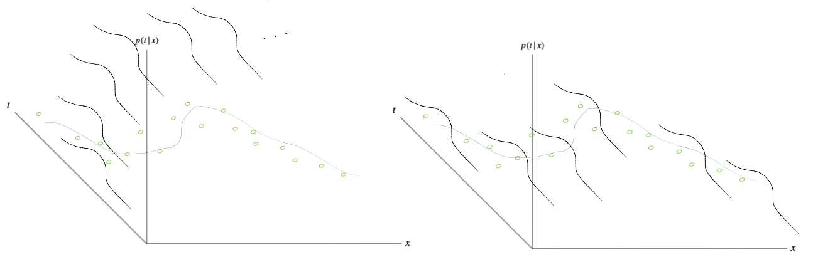
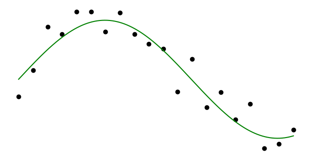
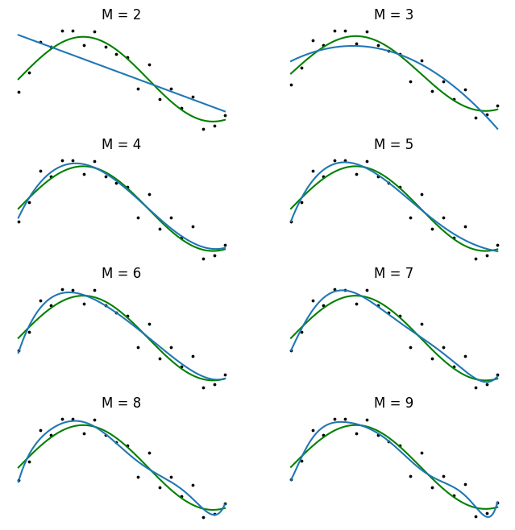
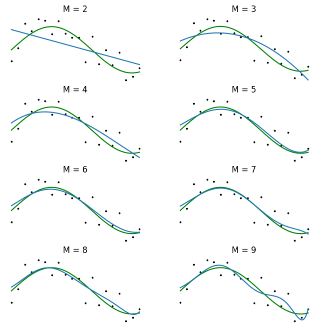

Preface
This post aims to introduce different approaches to curve fitting, and in particular, different parametric approaches to curve fitting. It follows closely section 1.2.5 from Bishop’s Pattern Recognition and Machine Learning, where I expand on some of the more vague concepts introduced. The goal is to see how incorporating particular assumptions into the probabilistic model leads to instances of deterministic approaches. Finally, the Appendix contains some extra derivations and code to “actually do” the curve fitting.
1 Introduction
In a canonical scenario, we observe a real-valued variable \(t\) and we’d like to model it. Simply put, we’d like to describe a mathematical process describing the creation of \(t\). Once we build such a model we can gather insights and make predictions. In this post, we consider the supervised setting where we model a target variable \(t\) as a function of some observed input variable \(x\). To this end, we have gathered a set of \(N\) realizations \(t_n\) of \(t\) together with a corresponding set of realizations \(x_n\) of \(x\),
\[ \pmb{\mathsf{x}} = \{x_1, x_2, ..., x_N\}^\intercal, \; \pmb{\mathsf{t}} = \{t_1, t_2, ..., t_N\}^\intercal. \]
In this post, we will consider synthetic data where the underlying data generating process is
\[ t = \text{sin}(2 \pi x) + \mathcal{N}(0, \beta^{-1}), \tag{1.1} \]
where we’ve denoted the variance as \(\beta^{-1}\) so that \(\beta = 1 / \sigma^2\) which we call the precision. The goal is to exploit our observed data \(\{ \pmb{\mathsf{x}}, \pmb{\mathsf{t}} \}\) to create a model of the underlying generative (and random) function \((1.1)\) so that we can then do something useful – for example, predict an unobserved value of \(t\) for a new observed value of \(x\). The type of modeling discussed in this post is referred to as parametric because, as we shall see, we predefine a family of data-generating functions and then tune the parameters governing those functions according to how well the resultant function explains our observed dataset.
2 The Deterministic Approach
2.1 The Model
In the deterministic approach, we simply consider our target variable \(t\) to be a parameterized function of (i) the input variable \(x\) and (ii) some unknown parameters \(\mathbf{w}\). In other words, we assume \(t\) is the result of a non-random data-generating process which can be described by a function within the family of functions
\[ y(x, \mathbf{w}) = w_0 + w_1x + w_2x^2 + \dots + w_Mx^M = \sum_{j=0}^M w_j x^j, \tag{2.1} \]
where \(M\) is the order of the polynomial, and the polynomial coefficients \(w_0, ..., w_M\) are packaged in the vector \(\mathbf{w}\). Although \(y(x, \mathbf{w})\) is a nonlinear function of \(x\), it is linear in the unknown parameters \(\mathbf{w}\). Functions that are linear in the unknown parameters have special properties and are called linear models.
2.2 Least-Squares Estimation
Although we’re trying to model the variable \(t\) as a function of the input variable \(x\), we only have realizations of these variables which we’ve stored in \(\{\pmb{\mathsf{x}}, \pmb{\mathsf{t}}\}\). In the deterministic approach we try and find a setting of \(\mathbf{w}\) that best agrees with our dataset \(\{\pmb{\mathsf{x}}, \pmb{\mathsf{t}}\}\) by minimizing some notion of “error”. This error measures the misfit between a realized model – the function \(y(x, \mathbf{w})\) for a given setting of \(\mathbf{w}\) – and the training data points. A widely used (and simple) error function is given by the sum-of-squares of the Euclidean distance between predictions \(y(x_n, \mathbf{w})\) and the corresponding target values \(t_n\),
\[ E(\mathbf{w}) = \frac{1}{2} \sum_{n=1}^N \{y(x_n, \mathbf{w}) - t_n \}^2. \tag{2.2} \]
The value of \(E(\mathbf{w})\) is always non-negative and is zero only when \(y(x, \mathbf{w})\) passes exactly through every training point. Using the error function \((2.2)\) in order to find the parameter values for \(\mathbf{w}\) is called the method of least-squares. It is visualized in Figure 1.

Solving for \(\mathbf{w}\) in this setting is fairly straightforward. Because the error function \((2.2)\) is a quadratic function of the parameters \(\mathbf{w}\), its derivative with respect to \(\mathbf{w}\) will be linear in the elements of \(\mathbf{w}\). Therefore, the minimization of the error function has a unique solution, which we denote \(\mathbf{w}^*\). It can be found in closed form (Appendix 1). We can then use \(y(x, \mathbf{w}^{*})\) to predict new values of the target \(t\) for new observed values of the input \(x\).
2.3 Overfitting
There remains the need to choose the order \(M\) of the polynomial, which falls within the realm of model selection. Choosing a large \(M\) yields a flexible set of models for us to fit, but they are susceptible to overfitting. We will see later that the least-squares method represents a special case of maximum likelihood, and that overfitting can be viewed as a general symptom of maximum likelihood.
For now, we can continue with a particular method to avoid overfitting – regularization. This involves adding a new term to the error function \((2.2)\) that penalizes the parameters \(\mathbf{w}\) for being too large. The simplest penalty term to add is the sum-of-squares of the weights. This leads to a new error function,
\[ \overset{\sim}{E} (\mathbf{w}) = \frac{1}{2} \sum_{n=1}^N \{y(x_n, \mathbf{w}) \}^2 + \frac{\lambda}{2} \lVert \mathbf{w} \rVert^2 \tag{2.3}, \]
where \(\lVert \mathbf{w} \rVert^2 = \mathbf{w}^\intercal \mathbf{w} = w_0^2 + w_1^2 + \dots + w_M^2\) and the parameter \(\lambda\) controls the strength of regularization. Like \((2.2)\), the error function \((2.3)\) can be minimized in close form (Appendix 2). Instituting such a penalty term as we did takes on different names depending on the literature. In the statistics literature they are known as shrinkage methods, and in the context of neural networks it is known as weight decay. Lastly, the specific case of \((2.3)\) is known as ridge regression.
3 A Probabilistic Approach
3.1 The Model
In the deterministic approach we assumed \(t\) to be the result of a deterministic function of \(x\) and unknown parameters \(\mathbf{w}\). We now consider a probabilistic model so that we can express uncertainty in our predictions.
We may not want to make such a strong statement as saying “\(t\) is exactly equal to \(y(x, \mathbf{w})\)” as we did in the previous section. This could be because we think there is noise in the observations \(\pmb{\mathsf{t}}\), for example due to measurement error. To articulate this assumed reality we need to place a distribution over the target variable \(t\). A sensible distributional assumption is to place a Gaussian distribution over \(t\) with its mean given by the parameterized function \(y(x, \mathbf{w})\) and its variance being fixed and unknown. This is visualized in Figure 2.

To understand what we’re effectively saying when we create such a model, it is useful to re-emphasize and apply the data-generating process perspective. We can think of our model as describing a process that produces \(t\) from a given \(x\) and parameter setting \(\mathbf{w}\). Last section, this process was a deterministic function \(y(x, \mathbf{w})\). In this section, we extend the process by positing that each \(t\) is the result of \(y(x, \mathbf{w})\) and some additive uncertainty, where that additive uncertainty takes the form of a zero-mean Gaussian distribution with unknown variance. This is to say that we are assuming, to have gotten a particular instance of \(t\):
- we are given an instance of \(x\),
- this instance of \(x\) is then used to obtain the output of the parameterized function \(y(x, \mathbf{w})\),
- to which we add a sample from a zero-mean Gaussian with fixed and unknown variance.
This leads to the following model,
\[\begin{align} p(t|x, \mathbf{w}, \beta) &= y(x, \mathbf{w}) + \mathcal{N}(0, \beta^{-1}) \notag \\ &= \mathcal{N}(y(x, \mathbf{w}), \beta^{-1}), \tag{3.1} \end{align}\]
where we’ve used the scaling property of the Gaussian distribution’s mean. \((3.1)\) is an observation model and is more specifically referred to as the Gaussian noise model or a conditional Gaussian model.
3.2 Maximum Likelihood Estimation
In order to use the training dataset \(\{\pmb{\mathsf{x}}, \pmb{\mathsf{t}}\}\) to determine the values of the unknown parameters \(\mathbf{w}\) and \(\beta\), we will use a more general approach than error minimization – maximum likelihood estimation. As the name suggests, we will search for a setting of \(\mathbf{w}\) and \(\beta\) so that the likelihood of our observed data \(\pmb{\mathsf{t}}\) is maximized. In other words, we’ve defined a data-generating process, and we want to find the setting of the parameters such that the probabilities of our process having created each observed \(t_n \in \pmb{\mathsf{t}}\) from each \(x_n \in \pmb{\mathsf{x}}\) are maximized. The likelihood measures the aggregation of all these point-wise probabilities.
In order to use maximum likelihood estimation, we need to have a likelihood function. A likelihood function is derived from an observation model. It can be thought of as an observation model being applied to a particular dataset. Assuming the data \(\pmb{\mathsf{t}}\) were independently sampled from \((3.1)\), the likelihood function is the product of evaluating how consistent the model is with each datapoint \((t_n, x_n)\), and is evaluated for a particular setting of \(\mathbf{w}\) and \(\beta\),
\[ p(\pmb{\mathsf{t}}| \pmb{\mathsf{x}}, \mathbf{w}, \beta) = \prod_{n=1}^N \mathcal{N}(t_n|y(x_n, \mathbf{w}), \beta^{-1}). \tag{3.2} \]
Each time we choose a setting for \(\mathbf{w}\) and \(\beta\) and plug them into our model, we are defining a conditional distribution given by \((3.1)\). This conditional distribution may agree with the dataset we have, or it may not. Examples of agreement and disagreement are shown in Figure 3.

We now demonstrate how, in practice, we compute the maximum likelihood estimates for \(\mathbf{w}\) and \(\beta\). In this example, it can be done in closed form and amounts to taking the derivative of the likelihood \((3.2)\), setting it equal to zero, and then solving for \(\mathbf{w}\) or \(\beta\). We begin with \(\mathbf{w}\). It is common to instead maximize the log likelihood instead of the likelihood \((3.2)\) for numerical stability and convenience. We can write the log likelihood as
\[ \text{ln}p(\pmb{\mathsf{t}}| \pmb{\mathsf{x}}, \mathbf{w}, \beta) = - \frac{\beta}{2} \sum_{n=1}^N \{y(x_n ,\mathbf{w}) - t_n \}^2 + \frac{N}{2} \text{ln}\beta - \frac{N}{2} \text{ln}(2 \pi). \tag{3.3} \]
3.2.1 Maximum Likelihood’s connection to Least-Squares
In taking the derivative of \((3.3)\) with respect to \(\mathbf{w}\), we can omit the last two terms as they do not depend on \(\mathbf{w}\). We can also replace the coefficient \(\frac{\beta}{2}\) with \(\frac{1}{2}\) since scaling \((3.3)\) by a constant won’t change the location of the maximum of \((3.3)\) with respect to \(\mathbf{w}\). Lastly, we can equivalently minimize the negative log likelihood. This leaves us with minimizing
\[ \frac{1}{2} \sum_{n=1}^N \{y(x_n, \mathbf{w}) - t_n \}^2. \tag{3.4} \]
And so we see that the sum-of-squares error function has arisen as a consequence of maximizing the likelihood under the assumption of a Gaussian noise distribution. In fact, for a Gaussian noise model, maximum likelihood estimation and least-squares estimation find the same \(\mathbf{w}\); in particular, the one that minimizes \((3.4)\). Once we’ve found the maximum likelihood estimate for \(\mathbf{w}\), which we will denote \(\mathbf{w}_{\text{ML}}\), we can use it to find the setting for the precision parameter \(\beta\) of the Gaussian conditional distribution. Maximizing \((3.3)\) with respect to \(\beta\) yields
\[ \frac{1}{\beta_{\text{ML}}} = \frac{1}{N} \sum_{n=1}^N \{y(x_n, \mathbf{w}_{\text{ML}}) - t_n \}^2. \tag{3.5} \]
And so we see that the maximum likelihood procedure yields a variance \(\sigma^2\) as equalling the average squared deviation between the observed data points and the function \(y(x, \mathbf{w}_{\text{ML}})\).
3.2.2 Maximum Likelihood’s predictive distribution
The predictive distribution as a result of the maximum likelihood approach amounts to plugging in the maximum likelihood estimates \(\mathbf{w}_{\text{ML}}\) and \(\beta_{\text{ML}}\) into the observation model 3.1:
\[ p(t|x, \mathbf{w}_{\text{ML}}, \beta_{\text{ML}}) = \mathcal{N}(y(x, \mathbf{w}_{\text{ML}}), \beta^{-1}_{\text{ML}}). \tag{3.6} \]
3.3 Maximum a posteriori Estimation
Introducing a prior distribution over the parameters \(\mathbf{w}\) is a way of introducing our prior beliefs (perhaps through domain expertise) about the parameters before observing our dataset. Additionally, as we will see, it serves as a regularizer for our estimate of \(\mathbf{w}\). Importantly, it is also one of the components in Bayes’ theorem, and takes us a step towards a full Bayesian treatment. For simplicity, we introduce a simple Gaussian prior
\[ p(\mathbf{w}| \alpha) = \mathcal{N}(\mathbf{w} | \mathbf{0}, \alpha^{-1} \mathbf{I}) = \left( \frac{\alpha}{2 \pi} \right)^{(M+1) / 2} \text{exp} \left[- \frac{\alpha}{2} \mathbf{w}^{\intercal} \mathbf{w} \right], \tag{3.7} \]
where \(\alpha\) is the precision of the distribution and \(M+1\) is the number of elements in \(\mathbf{w}\) for an \(M\) order polynomial function. Variables such as \(\alpha\) are called hyperparameters since we have to choose their values. Now that we have a prior, we can use Bayes’ theorem to yield a quantity proportional to the posterior,
\[ \overbrace{ p(\mathbf{w}|\pmb{\mathsf{x}}, \pmb{\mathsf{t}}, \alpha, \beta) }^{\text{Posterior } p(\mathbf{w}|D)} = \frac{\overbrace{p(\pmb{\mathsf{t}}|\pmb{\mathsf{x}}, \mathbf{w}, \beta)}^{\text{Likelihood } p(D|\mathbf{w})} \; \cdot \; \overbrace{p(\mathbf{w}|\alpha)}^{\text{Prior }p(\mathbf{w})}}{\underbrace{p(\pmb{\mathsf{t}}|\pmb{\mathsf{x}})}_{\text{Model Evidence } p(D)}} \propto \overbrace{p(\pmb{\mathsf{t}}|\pmb{\mathsf{x}}, \mathbf{w}, \beta)}^{\text{Likelihood } p(D|\mathbf{w})} \; \cdot \; \overbrace{p(\mathbf{w}|\alpha)}^{\text{Prior }p(\mathbf{w})}, \tag{3.8} \]
where the proportion relation \(\propto\) comes from the fact that the denominator of Bayes’ theorem, \(p(D) = p(\mathbf{t} | \mathbf{x})\), does not depend on \(\mathbf{w}\). Maximizing the right hand size of \((3.8)\) with respect to \(\mathbf{w}\) is equivalent to maximizing the posterior with respect to \(\mathbf{w}\) due to the proportionality. By optimizing \(\mathbf{w}\) to maximize the posterior, we are finding the most probable parameter values \(\mathbf{w}\) considering our observed data and also our prior knowledge about \(\mathbf{w}\) encapsulated in the (data independent) prior \(p(\mathbf{w} | \alpha)\). This yields a tradeoff between what we believed about \(\mathbf{w}\) before seeing our data, and the \(\mathbf{w}\) that best fits our data. This technique is referred to maximum a posteriori estimation, MAPE, or MAP.
3.3.1 Maximum a posteriori’s connection to Least-Squares
Taking the negative logarithm of \((3.8)\) and combining with the log likelihood in \((3.3)\) and the prior in \((3.7)\), it can be shown that the maximum of the posterior is equivalenty the minimum of the following expression:
\[ \frac{\beta}{2} \sum_{n=1}^N \{y(x_n, \mathbf{w}) - t_n \}^2 + \frac{\alpha}{2} \mathbf{w}^\intercal \mathbf{w}. \tag{3.9} \]
If we define \(\lambda = \alpha / \beta\), we can rewrite \((3.9)\) as
\[ \frac{1}{2} \sum_{n=1}^N \{y(x_n, \mathbf{w}) - t_n \}^2 + \frac{\lambda}{2} \mathbf{w}^\intercal \mathbf{w}. \tag{3.10} \]
And so we see that minimizing the regularized sum-of-squares function introduced in \((4)\) arises naturally from maximizing the posterior of a Gaussian noise model with Gaussian prior.
Similar to the maximum likelihood section, once we’ve found the maximum a posteriori estimate for \(\mathbf{w}\), which we will denote \(\mathbf{w}_{\text{MAP}}\), we can use it to find the setting for the precision parameter \(\beta\). We did not introduce a prior over \(\beta\), so the negative logarithm of the right-hand-side of \((3.8)\) is
\[ -\text{ln} \left[ \: p(\pmb{\mathsf{t}}|\pmb{\mathsf{x}}, \mathbf{w}, \beta) p(\mathbf{w}|\alpha) \: \right] = -[ \: \text{ln}p(\pmb{\mathsf{t}}|\pmb{\mathsf{x}}, \mathbf{w}, \beta) + \text{ln} p(\mathbf{w}|\alpha) \: ]. \tag{3.11} \]
Since we’ve only gained an additive term that does not functionally depend on \(\beta\), solving for \(\beta_{\text{MAP}}\) yields a near-equivalent expression to \((3.5)\) except we now use \(\mathbf{w}_{\text{MAP}}\) instead of \(\mathbf{w}_{\text{ML}}\):
\[ \frac{1}{\beta_{\text{MAP}}} = \frac{1}{N} \sum_{n=1}^{N} \{y(x_n, \mathbf{w}_{\text{MAP}}) - t_n\}^2. \tag{3.12} \]
3.3.2 Maximum a posteriori’s predictive distribution
Similar to Maximum Likelihood, the result of the maximum a posteriori estimation method are point-estimates for the parameters \(\mathbf{w}\) and \(\beta\). We can similarly plug in those estimates, denoted \(\mathbf{w}_{\text{MAP}}\) and \(\beta_{\text{MAP}}\), into the observation model \((3.1)\):
\[ p(t|x, \mathbf{w}_{\text{MAP}}, \beta_{\text{MAP}}) = \mathcal{N}(y(x, \mathbf{w}_{\text{MAP}}), \beta^{-1}_{\text{MAP}}). \tag{3.13} \]
3.4 Bayesian Estimation
So far we have been making a point estimate of \(\mathbf{w}\) which does not yet amount to a Bayesin treatment. In a Bayesian treatment, we take into account all possible \(\mathbf{w}\) that could have explained our data. To predict a new value of \(t\) for a new \(x\), we marginalize over all possible settings of \(\mathbf{w}\), yielding the posterior predictive distribution or Bayesian model average. The goal of the Bayesian treatment is to compute the posterior over the weights \(p(\mathbf{w}|D)\) which represents all possible settings of \(\mathbf{w}\) that give rise to models that can explain our observed data \(D\). To this end, we must use Bayes’ theorem:
\[ p(\mathbf{w}|D) = \frac{p(D|\mathbf{w})p(\mathbf{w})}{p(D)}. \tag{3.14} \]
And for our regression problem in particular, \((3.14)\) can be further specified as
\[ p(\mathbf{w}|\pmb{\mathsf{t}}, \pmb{\mathsf{x}}, \alpha, \beta) = \frac{\overbrace{p(\pmb{\mathsf{t}} | \pmb{\mathsf{x}}, \mathbf{w}, \beta)}^{\text{Likelihood}} \cdot \overbrace{p(\mathbf{w} | \alpha)}^{\text{Prior}}}{\underbrace{p(\pmb{\mathsf{t}} | \pmb{\mathsf{x}})}_{\text{Evidence}}}. \tag{3.15} \]
To simplify this, we will assume the parameters \(\alpha\) and \(\beta\) are fixed and known in advance, and we will solely focus on the unknown \(\mathbf{w}\). \((3.15)\) then turns into
\[ p(\mathbf{w} \vert \pmb{\mathsf{x}}, \pmb{\mathsf{t}}) = \frac{p(\pmb{\mathsf{t}} \vert \pmb{\mathsf{x}}, \mathbf{w}) \cdot p(\mathbf{w})}{p(\pmb{\mathsf{t}} \vert \pmb{\mathsf{x}})}. \tag{3.16} \]
So instead of computing a single point estimate of the weights (as we’ve done thus far); now, given the likelihood and the prior, we can compute the posterior distribution over \(\mathbf{w}\) via Bayes’ rule. Computing the posterior can be facilitated by our choice of prior (a modeling choice) so that we can calculate the posterior in closed form. Those priors are referred to as conjugate priors. There are a number of other techniques used to instead approximate the posterior \(p(\mathbf{w}|\pmb{\mathsf{t}}, \pmb{\mathsf{x}})\) when conjugacy is impossible. These include variational inference and markov chain monte carlo sampling. Pretty much all posterior approximation methods introduce different ways to circumvent the explicit calculation of the denominator \(P(D) = p(\pmb{\mathsf{t}}|\pmb{\mathsf{x}})\) which is intractable for any interesting model. We save all these methods for another post and assume we’ve found the exact posterior.
3.4.1 Bayesian’s predictive distribution
Once it is found, the posterior represents all possible settings of \(\mathbf{w}\) in that they induce models that can explain our data. To incorporate this information into a predictive distribution so that we can predict new values of an unobserved \(t\) given an unobserved \(x\), we marginalize over all possible settings of \(\mathbf{w}\) like so:
\[ p(t|x, \pmb{\mathsf{x}}, \pmb{\mathsf{t}}) = \int p(t|x, \mathbf{w}) p(\mathbf{w}|\pmb{\mathsf{x}}, \pmb{\mathsf{t}}) \text{d}\mathbf{w}, \tag{3.17} \]
where \(p(t|x, \mathbf{w})\) is our model given by \((3.1)\) omitting the dependence on \(\beta\), and \(p(\mathbf{w}|\pmb{\mathsf{x}}, \pmb{\mathsf{t}})\) is the posterior over the weights \(\mathbf{w}\). In \((3.15)\),
- we look at a possible setting of \(\mathbf{w}\) which we will denote \(\mathbf{w}_i\) according to the posterior \(p(\mathbf{w}|\pmb{\mathsf{x}}, \pmb{\mathsf{t}})\). Placing \(\mathbf{w}_i\) into our observation model \(p(t|x, \mathbf{w})\) defines a “fitted model” \(p(t|x, \mathbf{w}_i)\).
- this “fitted model” is multiplied by the probability of that setting of \(\mathbf{w}_i\) given by the posterior. In other words, the probability that \(p(t|x, \mathbf{w}_i)\) was used to generate our observed data \(\pmb{\mathsf{t}}\) from the inputs \(\pmb{\mathsf{x}}\).
- we do this for every possible setting \(\mathbf{w}_i\) according to the posterior and integrate.
Thus, we are taking a weighted average of all possible “fitted models”, where the weights of each component are determined by how likely the setting of \(\mathbf{w}\) is according to its posterior.
3.4.2 Analyzing our specific predictive distribution
We will now analyze the specific form of \((3.17)\) for our example problem. A consequence of us selecting a Gaussian likelihood and a Gaussian prior is that we can analytically compute the posterior; and it is Gaussian as well – an example of conjugacy. More so, we can analytically solve the integration in \((3.17)\) to get a predictive distribution that itself is Gaussian. In fact, it takes on the more specific form
\[ p(t|x, \pmb{\mathsf{x}}, \pmb{\mathsf{t}}) = \mathcal{N}(t|m(x), s^2(x)), \tag{3.18} \]
where the mean and variance are given by
\[\begin{align} &m(x) = \beta \pmb{\phi}(x)^{\intercal} \mathbf{S} \sum_{n=1}^N \pmb{\phi}(x_n) t_n \tag{3.19} \\ & s^2(x) = \overbrace{\beta^{-1}}^{\text{noise}} + \underbrace{\pmb{\phi}(x)^\intercal \mathbf{S} \pmb{\phi}(x)}_{\text{Parameter Uncertainty}} \tag{3.20} \end{align}\]
\(\mathbf{S}\) is a matrix, and is given by
\[ \mathbf{S}^{-1} = \alpha \mathbf{I} + \beta \sum_{n=1}^N \pmb{\phi}(x_n) \pmb{\phi}(x),^\intercal \tag{3.21} \]
where \(\mathbf{I}\) is the unit matrix, and we have defined the vector \(\pmb{\phi}(x)\) with elements \(\phi_i(x) = x^i\) for \(i=0,...,M\). In looking at the predictive distribution \((3.16)\), we now see that the variance depends on \(x\). This is unlike the maximum likelihood predictive distribution \((3.6)\) and the maximum a posteriori predictive distribution \((3.13)\) where the variance is fixed for any value of \(x\). It’s expansion is described by \((3.20)\) and it contains two additive components. The first component, as was already expressed in the maximum likelihood predictive distribution \(\beta_{\text{ML}}\), is the noise on the target variables. The second component, which has not been expressed until now, arises from the uncertainty in the parameters \(\mathbf{w}\) and is a consequence of treating \(\mathbf{w}\) as a random variable – an artifact of the Bayesian treatment.
4 Summary
If we assume a Gaussian noise observation model and use maximum likelihood to find the setting for the parameters \(\mathbf{w}\), it is equivalent to using least-squares to find \(\mathbf{w}\).
If we assume a Gaussian noise observation model and an Isotropic Gaussian prior model on \(\mathbf{w}\), and then use maximum a posteriori to find the setting for \(\mathbf{w}\), it is equivalent to using least-squares with weight decay regularization to find \(\mathbf{w}\).
If we assume a Gaussian noise observation model and an Isotropic Gaussian prior model on \(\mathbf{w}\), and then we use the Bayesian approach, we do not find a setting for \(\mathbf{w}\), but rather a distribution over \(\mathbf{w}\). This allows us to introduce parameter uncertainty in our predictive distribution – a result of many different settings of \(\mathbf{w}\) that could explain the training data.
References
Pattern Recognition and Machine Learning, Christopher M. Bishop, 2006
Bayesian Inference: An Introduction to Principles and Practice in Machine Learning Michael E. Tipping, 2004
Appendix
1 Solving for the parameters
1.1 Analytical Setup
We have the error function \(E(\mathbf{w}) = \frac{1}{2} \sum_{n=1}^N \{y(x_n, \mathbf{w}) - t_n \}^2\), where \(y(x, \mathbf{w}) = \sum_{j=0}^M w_j x^j\). We’d like to find the optimal setting for \(\mathbf{w}\) in the sense that it minimizes \(E(\mathbf{w})\). We will see that we can cast this minimization problem as solving a system of linear equations. We will then solve that system of linear equations with code to attain the optimal \(\mathbf{w}^{*}\).
Claim: The \(w_i\) in \(\mathbf{w} = (w_0, w_1, w_2 ..., w_M)\) that minimize the error function \(E(\mathbf{w})\) are given by the solution to the following set of linear equations,
\[ \sum_{j=0}^M A_{ij}w_j = T_i \;\; \text{ where } \;\; A_{ij} = \sum_{n=1}^N(x_n)^{(i+j)}, \; T_i = \sum_{n=1}^N (x_n)^i t_n \]
Proof: We will take the derivative of \(E(\mathbf{w})\) with respect to \(\mathbf{w}\), set it to zero, and then rearrange terms to prove the claim above.
By the chain rule,
\[ \frac{\partial E(\mathbf{w})}{\partial w_i} = \frac{\partial E(\mathbf{w})}{\partial y(x_n, \mathbf{w})} \frac{\partial y(x_n, \mathbf{w})}{\partial w_i} \tag{1} \]
Solving the two terms on the right hand side yields
\[ \begin{aligned} &\frac{\partial E(\mathbf{w})}{\partial y(x_n, \mathbf{w})} = \sum_{n=1}^N \{y(x_n, \mathbf{w}) - t_n \} \\ &\frac{\partial y(x_n, \mathbf{w})}{\partial w_i} = \frac{\partial}{\partial w_i} (w_0 + w_1x_1 + \dots w_i x_n^i \dots + w_m x_n^M) = x_n^i \end{aligned} \]
Substituting back into \((1)\) yields
\[ \begin{aligned} \frac{\partial E(\mathbf{w})}{\partial w_i} & = \sum_{n=1}^N \{y(x_n, \mathbf{w}) - t_n \} x_n^i \\ & \overset{(i)}{=} \sum_{n=1}^N (\sum_{j=0}^M w_j x_n^{j} - t_n)x_n^i \\ & \overset{(ii)}{=} \sum_{n=1}^N (\sum_{j=0}^M w_j x_n^{i}x_n^j - t_n x_n^i) \\ & \overset{(iii)}{=} \sum_{n=1}^N (\sum_{j=0}^M w_j x_n^{(i+j)} - t_n x_n^i) \end{aligned} \]
where in \((\text{i})\) we use the definition of \(y(x_n, \mathbf{w})\), in \((\text{ii})\) we distribute \(x_n^i\) into the parentheses, and in \((\text{iii})\) we use the exponent rule. Setting the derivative to \(0\) and rearranging,
\[ \begin{aligned} \sum_{n=1}^N (\sum_{j=0}^M w_j x_n^{(i+j)} - t_n x_n^i) & = 0 \\ \sum_{n=1}^N \sum_{j=0}^M w_j x_n^{(i+j)} & = \sum_{n=1}^N t_n x_n^i \\ \sum_{j=0}^M A_{ij}w_j &= T_i \end{aligned} \]
\(\blacksquare\)
1.2 Code
import numpy as np
import matplotlib.pyplot as plt
def create_A(xs: np.array, M: int) -> np.array:
"""
Create the matrix A where A_ij = sum_n=1^N [x_n^(i+j)].
"""
A = np.zeros((M, M))
# For each cell
for i in range(M):
for j in range(M):
A[i][j] = np.sum(xs**(i+j))
return A
def create_T(xs: np.array, ts: np.array, M: int) -> np.array:
"""
Create the vector T where T_i = sum_n=1^N (x_n^i) t_n.
"""
T = np.zeros((M,))
# For each row
for i in range(M):
T[i] = np.sum((xs ** i) * ts)
return T
def get_w(xs: np.array, ts: np.array, M: int) -> np.array:
"""
Creates A and T using `create_A` and `create_T` and then solves
the linear system of equations to get w.
"""
A = create_A(xs=xs, M=M)
T = create_T(xs=xs, ts=ts, M=M)
return np.linalg.solve(a=A, b=T)
def predict(w: np.array, x: np.array, M) -> np.array:
"""
Feature expand the input x and then run the linear
transformation involving w,x to get predictions for target t.
"""
# Get [x**1, x**2, x**3 ... x**M] for each x
N = x.shape[0]
powers = np.arange(0, M )
powers_expanded = np.tile(powers, (N,)).reshape(N, M)
xs_expanded = x.repeat(M).reshape(N, M)
xs_powered = np.power(xs_expanded, powers_expanded)
# Apply w
return w @ xs_powered.T

2 Solving for the parameters with a penalty term
2.1 Analytical Setup
We have the error function \(\overset{\sim}{E} (\mathbf{w}) = \frac{1}{2} \sum_{n=1}^N \{y(x_n, \mathbf{w}) \}^2 + \frac{\lambda}{2} \lVert \mathbf{w} \rVert^2\), where \(\lVert \mathbf{w} \rVert^2 = \mathbf{w}^\intercal \mathbf{w} = w_0^2 + w_1^2 + \dots + w_M^2\) and the parameter \(\lambda\) controls the strength of regularization. We’d like to find the optimal setting for \(\mathbf{w}\) in the sense that it minimizes \(\overset{\sim}{E} (\mathbf{w})\). We will see that we can cast this minimization problem as solving a system of linear equations. We will then solve that system of linear equations with code to attain the optimal \(\mathbf{w}^{*}\).
Claim: The \(w_i\) in \(\mathbf{w} = (w_1, w_2, ..., w_M)\) that minimize the error function \(\overset{\sim}{E} (\mathbf{w})\) are given by the solution to the following set of linear equations,
\[ \sum_{j=0}^M A_{ij}w_j + \lambda w_i = T_i \;\; \text{ where } \;\; A_{ij} = \sum_{n=1}^N(x_n)^{(i+j)}, \; T_i = \sum_{n=1}^N (x_n)^i t_n \]
Proof: We will take the derivative of \(\overset{\sim}{E} (\mathbf{w})\) with respect to \(\mathbf{w}\), set it to zero, and then rearrange terms to prove the claim above.
By the chain rule,
\[ \frac{\partial \overset{\sim}{E}(\mathbf{w})}{\partial w_i} = \frac{\partial E(\mathbf{w})}{\partial y(x_n, \mathbf{w})} \frac{\partial y(x_n, \mathbf{w})}{\partial w_i} + \frac{\lambda}{2} \frac{\partial \mathbf{w}^\intercal \mathbf{w}}{\partial w_i} \tag{2} \]
Solving the two terms on the right hand side yields
\[ \begin{aligned} &\frac{\partial \overset{\sim}{E}(\mathbf{w})}{\partial y(x_n, \mathbf{w})} = \sum_{n=1}^N \{y(x_n, \mathbf{w}) - t_n \} \\ &\frac{\partial y(x_n, \mathbf{w})}{\partial w_i} = \frac{\partial}{\partial w_i} (w_0 + w_1x_1 + \dots w_i x_n^i \dots + w_m x_n^M) = x_n^i \\ &\frac{\partial \mathbf{w}^\intercal \mathbf{w}}{\partial w_i} = \frac{\partial}{\partial w_i} (w_0^2 + w_1^2 + \dots w_i^2 + \dots w_M^2) = 2 w_i \end{aligned} \]
Substituting back into \((2)\) yields
\[ \begin{aligned} \frac{\partial \overset{\sim}{E}(\mathbf{w})}{\partial w_i} & = \sum_{n=1}^N \{y(x_n, \mathbf{w}) - t_n \} x_n^i + \frac{\lambda}{2} 2 w_i \\ & \overset{(i)}{=} \sum_{n=1}^N (\sum_{j=0}^M w_j x_n^{j} - t_n)x_n^i + \lambda w_i \\ & \overset{(ii)}{=} \sum_{n=1}^N (\sum_{j=0}^M w_j x_n^{i}x_n^j - t_n x_n^i) + \lambda w_i \\ & \overset{(iii)}{=} \sum_{n=1}^N (\sum_{j=0}^M w_j x_n^{(i+j)} - t_n x_n^i) + \lambda w_i \end{aligned} \]
where in \((\text{i})\) we use the definition of \(y(x_n, \mathbf{w})\) and \(\frac{\lambda}{2} \cdot 2 = \lambda\), in \((\text{ii})\) we distribute \(x_n^i\) into the parentheses, and in \((\text{iii})\) we use the exponent rule. Setting the derivative to \(0\) and rearranging,
\[ \begin{aligned} \sum_{n=1}^N (\sum_{j=0}^M w_j x_n^{(i+j)} - t_n x_n^i) + \lambda w_i & = 0 \\ \sum_{n=1}^N \sum_{j=0}^M w_j x_n^{(i+j)} + \lambda w_i & = \sum_{n=1}^N t_n x_n^i \\ \sum_{j=0}^M A_{ij}w_j + \lambda w_i &= T_i \end{aligned} \]
\(\blacksquare\)
2.2 Code
# ===== Reproducibility ====== #
# Create generator for reproducible resutls
seed = 123
generator = np.random.default_rng(seed)
# ===== Data Generation ======= #
# N = num datapoints; M = order of polynomial
N = 20
# Create signal and noisy signal
signal_fn = lambda x: np.sin(x)
signal_noisy_fn = lambda xs: signal_fn(xs) + generator.normal(loc=0, scale=0.5, size=(N,),)
# Create training data
xs = np.linspace(start=0, stop=5, num=N)
ts = signal_noisy_fn(xs)
# Create "signal"
x_axis = np.linspace(start=0, stop=5, num=1000)
signal = signal_fn(x_axis)
# ===== Plot Data ====== #
# Create figure
figure1 = plt.figure(figsize=(8, 4))
plt.axis("off")
# Plot Signal
line = np.linspace(start=0, stop=5, num=1000)
plt.plot(x_axis, signal, c="green")
# Plot training data
plt.scatter(xs, ts, c="black")
plt.show()
# ======= Functions to get W and Predict ====== #
def create_A(xs: np.array, M: int) -> np.array:
"""
Create the matrix A where A_ij = sum_n=1^N [x_n^(i+j)].
"""
A = np.zeros((M, M))
# For each cell
for i in range(M):
for j in range(M):
A[i][j] = np.sum(xs**(i+j))
return A
def create_T(xs: np.array, ts: np.array, M: int) -> np.array:
"""
Create the vector T where T_i = sum_n=1^N (x_n^i) t_n.
"""
T = np.zeros((M,))
# For each row
for i in range(M):
T[i] = np.sum((xs ** i) * ts)
return T
def create_lambdaI(size: int, ln_lambda: float) -> np.array:
"""
Create an identity matrix with lambda as the diagonal elements.
"""
lambda_ = np.exp(ln_lambda)
identity = np.eye(N=size)
return lambda_ * identity
def get_w(xs: np.array, ts: np.array, M: int, ln_lambda: float) -> np.array:
"""
Creates A and T using `create_A` and `create_T` and then solves
the linear system of equations to get w.
"""
A = create_A(xs=xs, M=M)
lambdaI = create_lambdaI(size=M, ln_lambda=ln_lambda)
A_plus_lambdaI = A + lambdaI
T = create_T(xs=xs, ts=ts, M=M)
return np.linalg.solve(a=A_plus_lambdaI, b=T)
def predict(w: np.array, x: np.array, M) -> np.array:
"""
Feature expand the input x and then run the linear
transformation involving w,x to get predictions for target t.
"""
# Get [x**1, x**2, x**3 ... x**M] for each x
N = x.shape[0]
powers = np.arange(0, M )
powers_expanded = np.tile(powers, (N,)).reshape(N, M)
xs_expanded = x.repeat(M).reshape(N, M)
xs_powered = np.power(xs_expanded, powers_expanded)
# Apply w
return w @ xs_powered.T
# ======== Find W, Predict, and Plot for various M ======= #
figure = plt.figure(figsize=(8, 8))
cols, rows = 2, 4
for i in range(1, cols * rows + 1):
M = i + 1
w = get_w(
xs=xs,
ts=ts,
M=M,
ln_lambda=0,
)
t_hats = predict(w, line, M)
figure.add_subplot(rows, cols, i)
plt.axis("off")
plt.title(f"M = {M}")
# Plot signal
plt.plot(line, signal_fn(line), label="Signal", c="green")
# Plot data
plt.scatter(xs, ts, s = 3, label="Data", c="black")
# Plot predictions
plt.plot(line, t_hats, label="Predicted Signal")
plt.show()